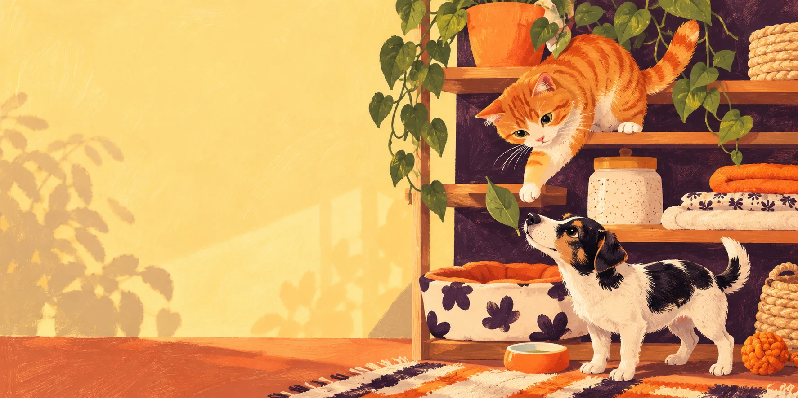

Ветеринарный приём
Уточнить время работы кабинета и возможность записи.
Переделкино Ближнее • Бориса Пастернака, 23
Для тех, кто дорог.ЗооВед — ветеринарный кабинет, аптека и товары для животных в вашем районе. Сначала выберите, с каким вопросом вы к нам.

01 / Знакомство
На Бориса Пастернака, 23 объединены ветеринарный кабинет, зоомагазин и ветеринарная аптека. У медицинского приёма и покупки корма разные задачи — нужное направление легко выбрать заранее.
02 / Повод обратиться
Уточнить время работы кабинета и возможность записи.
Согласовать доступность исследования и подготовку.
Спросить о наличии препарата по назначению врача.
Уточнить наличие нужного корма или аксессуаров.
Возможность услуги, приём специалиста и подготовка подтверждаются клиникой при записи.
03 / До встречи
Четыре небольших дела перед визитом. Отметьте готовое и составьте обращение — его можно скопировать или использовать при звонке.
0 из 4 пунктов отмечено
04 / Стоимость
Точная сумма зависит от повода обращения и назначений. Обсудите её с клиникой до визита, чтобы понимать, что входит в услугу.
Ежедневно · 10:00–22:00
Ещё несколько слов
Позвоните в клинику или откройте её действующий канал. Конструктор обращения на этой странице только готовит текст: запись подтверждает сотрудник клиники.
Ветеринарный паспорт, имеющиеся результаты исследований и список текущих назначений. Подготовку к конкретному исследованию уточните у клиники.
Да, спросите о составе услуги и итоговой сумме при записи. Если опубликован ориентир, он не заменяет индивидуальное подтверждение клиники.